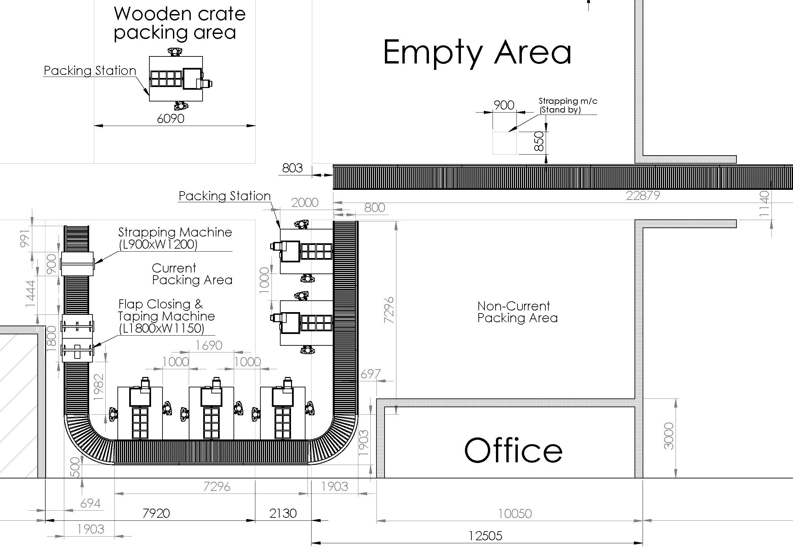
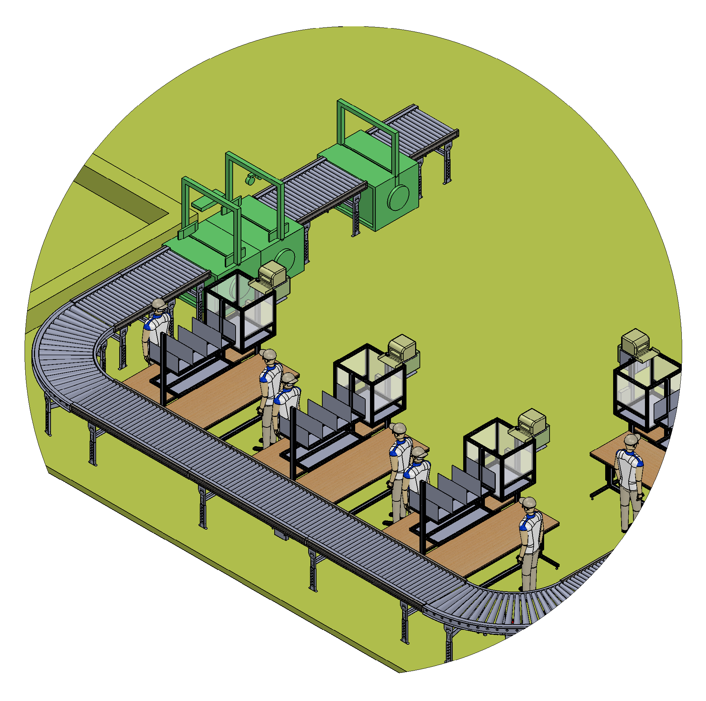
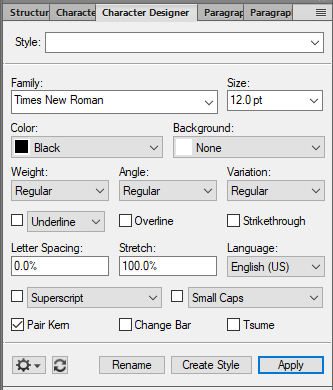
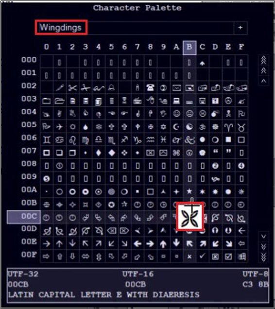
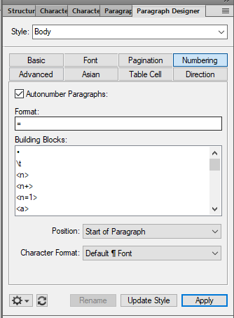

Projects & Assignments done so far
GA & Layout of Carton Packing & Conveying System

Objective of the Project
The primary aim of the system is to prepare the cartons, load them with airbags, package the same, and subsequently convey these prepared cartons to the dispatch area. This system comprises a conveyor, an airbag production machine, a flap-closing and taping machine, as well as a strapping machine.
Steps involved in this process:
- Preparing cartons
- Filling cartons with airbags
- Packing and sealing the cartons
- Conveying cartons to dispatch area
Tools used to prepare the layout:
Autodesk Inventor, AutoCAD
Creating a Customized Bullet in FrameMaker
Objective
In this module, the user will learn about creating the custom bullet in Adobe FrameMaker. This module is intended to be used by users who are new to Adobe FrameMaker
Introduction to Adobe FrameMaker
Adobe FrameMaker is the industry-standard tool for authoring and publishing multilingual technical content across mobile, web, desktop, and print. Structured FrameMaker is used to achieve consistency in documentation within industries such as aerospace, where several models of the same complex product exist, or pharmaceuticals, where translation and standardization are important requirements in communications about products. Unstructured FrameMaker uses tagged paragraphs without any imposed logical structure, except that expressed by the author’s concept, topic organization, and the formatting supplied by paragraph tags.
Role of Bullets in Documents
There are two types of common lists you can use in a document:
Bulleted Lists:
- Bullets are used to list the items where sequence is not important.
- Bullets are used to identify the key items or denote significance in any type of documents.
Numbered Lists:
- Numbers are used to list the items and to write the process where sequence is important.
In this document, we will learn to create customized bullets in Adobe FrameMaker.
Creating a Bullet in Adobe FrameMaker
The process of creating a customized bullet in adobe FrameMaker essentially consist of two major steps:
Designing a Character Tag
- To open a new document, go to the File > New > Document or press Ctrl + N key.
- To create a new document, select Portrait from the New dialog box.
- To open the Character Designer dialog box, go to the Format >
Character > Character Designer or press Ctrl+D.
The following dialog box appears.
 - Enter the style name in the Style field.
- Select 12.0 pt in the Size field.
- From the Family pull-down menu, select Webdings.
- From the Color pull-down menu, select Black.
- Select Create Style.
Result: Character has been designed.
Creating a Customized Bullet
- To open the Character Palette, go to the File > Utilities > Character
Palette.
The Character Palette dialog box appears.
 - From the font pull-down menu, select font Wingdings.
- To insert the desired character in the document, select the character and click the mouse twice in rapid succession.
- To open the Paragraph Designer dialog box, go to the Format >
Paragraph > Paragraph Designer or press Ctrl+M.
The following dialog box appears.
 - Select Numbering in the Paragraph Designer dialog box
- To enable the Format field, select the Autonumber Paragraphs checkbox.
- Copy the character from the document and paste it into the Format field.
- To create the bullet, select Update Style and then select Apply.
Result: Bullet has been created successfully.